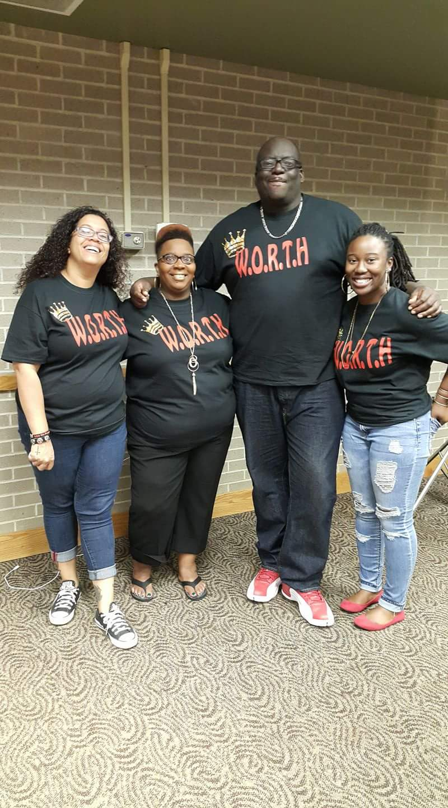

The W.O.R.T.H. is a collabaration of peer to peer mentoring groups. We are designed to enrich the qualities needed to maintain a happy, healthy life. Our goal is to continue to strengthen our local communities and families and provide our attendees with the proper tools of self-worth.
We are dedicated to empowering our youth. We promote healthy growth and development while shattering the statistics of our communities. We believe in teaching through a biblical and positive perspective. Our goal is to keep as many people as we can from becoming another statistic. The W.O.R.T.H. mentors people from all walks of life. We believe that through patience, experience, and love, each person can soar above their circumstances. We give people the tools necessary to break through the barriers of their life situations.